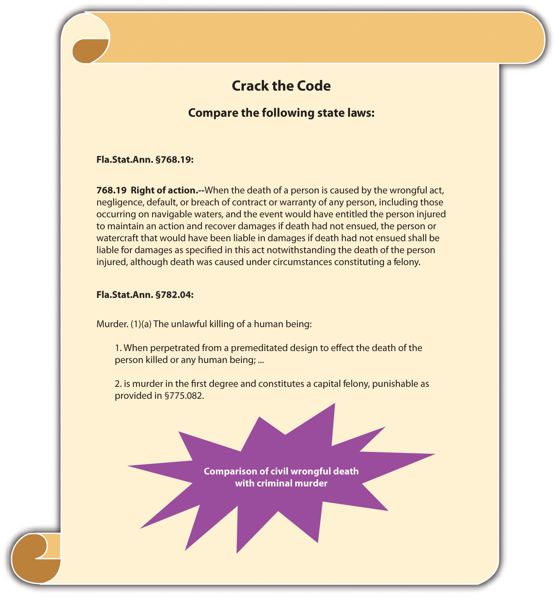

Law can be classified in a variety of ways. One of the most general classifications divides law into civil and criminal. A basic definition of civil law is “the body of law having to do with the private rights of individuals.”Yourdictionary.com, “Definition of Civil Law,” accessed August 16, 2010, http://www.yourdictionary.com/civil-law. As this definition indicates, civil law is between individuals, not the government. Criminal law involves regulations enacted and enforced by government action, while civil law provides a remedy for individuals who need to enforce private rights against other individuals. Some examples of civil law are family law, wills and trusts, and contract law. If individuals need to resolve a civil dispute, this is called civil litigationA legal action between individuals to resolve a civil dispute., or a civil lawsuit. When the type of civil litigation involves an injury, the injury action is called a tortA civil litigation matter that seeks to compensate a victim for an injury..
It is important to distinguish between civil litigation and criminal prosecutionA legal action where the government prosecutes a defendant to protect the public.. Civil and criminal cases share the same courts, but they have very different goals, purposes, and results. Sometimes, one set of facts gives way to a civil lawsuit and a criminal prosecution. This does not violate double jeopardy and is actually quite common.
In civil litigation, an injured party sues to receive a court-ordered remedy, such as money, property, or some sort of performance. Anyone who is injured—an individual, corporation, or other business entity—can sue civilly. In a civil litigation matter, the injured party that is suing is called the plaintiffThe individual suing in a civil litigation matter.. A plaintiff must hire and pay for an attorney or represent himself or herself. Hiring an attorney is one of the many costs of litigation and should be carefully contemplated before jumping into a lawsuit.
The alleged wrongdoer and the person or entity being sued are called the defendantThe alleged wrongdoer in a civil litigation matter and a criminal prosecution.. While the term plaintiff is always associated with civil litigation, the wrongdoer is called a defendant in both civil litigation and a criminal prosecution, so this can be confusing. The defendant can be any person or thing that has caused harm, including an individual, corporation, or other business entity. A defendant in a civil litigation matter must hire and pay for an attorney even if that defendant did nothing wrong. The right to a free attorney does not apply in civil litigation, so a defendant who cannot afford an attorney must represent himself or herself.
The goal of civil litigation is to compensate the plaintiff for any injuries and to put the plaintiff back in the position that person held before the injury occurred. This goal produces interesting results. It occasionally creates liability or an obligation to pay when there is no fault on behalf of the defendant. The goal is to make the plaintiff whole, not to punish, so fault is not really an issue. If the defendant has the resources to pay, sometimes the law requires the defendant to pay so that society does not bear the cost of the plaintiff’s injury.
A defendant may be liable without fault in two situations. First, the law that the defendant violated may not require fault. Usually, this is referred to as strict liabilityLiability without intent.. Strict liability torts do not require fault because they do not include an intent component. Strict liability and other intent issues are discussed in detail in Chapter 4 "The Elements of a Crime". Another situation where the defendant may be liable without fault is if the defendant did not actually commit any act but is associated with the acting defendant through a special relationship. The policy of holding a separate entity or individual liable for the defendant’s action is called vicarious liabilityThe transfer of a defendant’s liability based upon a special relationship.. An example of vicarious liability is employer-employee liability, also referred to as respondeat superiorA doctrine that holds the employer civilly liable for an employee’s conduct while on the job.. If an employee injures a plaintiff while on the job, the employer may be liable for the plaintiff’s injuries, whether or not the employer is at fault. Clearly, between the employer and the employee, the employer generally has the better ability to pay.
Chris begins the first day at his new job as a cashier at a local McDonald’s restaurant. Chris attempts to multitask and pour hot coffee while simultaneously handing out change. He loses his grip on the coffee pot and spills steaming-hot coffee on his customer Geoff’s hand. In this case, Geoff can sue McDonald’s and Chris if he sustains injuries. McDonald’s is not technically at fault, but it may be liable for Geoff’s injuries under a theory of respondeat superior.
The goal of civil litigation is to compensate the plaintiff for injuries, so the plaintiff must be a bona fide victim that can prove harm. If there is no evidence of harm, the plaintiff has no basis for the civil litigation matter. An example would be when a defendant rear-ends a plaintiff in an automobile accident without causing damage to the vehicle (property damage) or physical injury. Even if the defendant is at fault for the automobile accident, the plaintiff cannot sue because the plaintiff does not need compensation for any injuries or losses.
Often the plaintiff sues the defendant for money rather than a different, performance-oriented remedy. In a civil litigation matter, any money the court awards to the plaintiff is called damagesMoney the court awards the plaintiff in a civil litigation matter.. Several kinds of damages may be appropriate. The plaintiff can sue for compensatory damagesDamages that compensate the plaintiff for injury., which compensate for injuries, costsDamages that reimburse the plaintiff for money spent on the civil lawsuit., which repay the lawsuit expenses, and in some cases, punitive damagesDamages designed to punish the defendant.. Punitive damages, also referred to as exemplary damages, are not designed to compensate the plaintiff but instead focus on punishing the defendant for causing the injury.BMW of North America, Inc. v. Gore, 517 U.S. 559 (1996), accessed February 13, 2010, http://www.law.cornell.edu/supct/html/94-896.ZO.html.
A criminal prosecution takes place after a defendant violates a federal or state criminal statute, or in some jurisdictions, after a defendant commits a common-law crime. Statutes and common-law crimes are discussed in Section 1.6 "Sources of Law".
The government institutes the criminal prosecution, rather than an individual plaintiff. If the defendant commits a federal crime, the United States of America pursues the criminal prosecution. If the defendant commits a state crime, the state government, often called the People of the State pursues the criminal prosecution. As in a civil lawsuit, the alleged wrongdoer is called the defendant and can be an individual, corporation, or other business entity.
The attorney who represents the government controls the criminal prosecution. In a federal criminal prosecution, this is the United States AttorneyThe attorney representing the federal government in a federal criminal prosecution..United States Department of Justice, “United States Attorneys,” accessed February 15, 2010, http://www.justice.gov/usao. In a state criminal prosecution, this is generally a state prosecutorThe attorney representing the state government in a state criminal prosecution. or a district attorney.“United States’ Prosecuting Attorneys,” Galaxy.com website, accessed February 15, 2010, http://www.galaxy.com/dir968533/United_States.htm. A state prosecutor works for the state but is typically an elected official who represents the county where the defendant allegedly committed the crime.
The defendant in a criminal prosecution can be represented by a private attorney or a free attorney paid for by the state or federal government if he or she is unable to afford attorney’s fees and facing incarceration.Alabama v. Shelton, 535 U.S. 654 (2002), accessed August 16, 2010, http://www.law.cornell.edu/supct/html/00-1214.ZO.html. Attorneys provided by the government are called public defendersA government attorney who represents criminal defendants who cannot afford attorney’s fees and are facing incarceration..18 U.S.C. § 3006A, accessed February 15, 2010, http://www.law.cornell.edu/uscode/18/3006A.html. This is a significant difference from a civil litigation matter, where both the plaintiff and the defendant must hire and pay for their own private attorneys. The court appoints a free attorney to represent the defendant in a criminal prosecution because the Constitution is in effect in any criminal proceeding. The Constitution provides for the assistance of counsel in the Sixth Amendment, so every criminal defendant facing incarceration has the right to legal representation, regardless of wealth.
The presence of the Constitution at every phase of a criminal prosecution changes the proceedings significantly from the civil lawsuit. The criminal defendant receives many constitutional protections, including the right to remain silent, the right to due process of law, the freedom from double jeopardy, and the right to a jury trial, among others.
Another substantial difference between civil litigation and criminal prosecution is the goal. Recall that the goal of civil litigation is to compensate the plaintiff for injuries. In contrast, the goal of a criminal prosecution is to punish the defendant.
One consequence of the goal of punishment in a criminal prosecution is that fault is almost always an element in any criminal proceeding. This is unlike civil litigation, where the ability to pay is a priority consideration. Clearly, it is unfair to punish a defendant who did nothing wrong. This makes criminal law justice oriented and very satisfying for most students.
Injury and a victim are not necessary components of a criminal prosecution because punishment is the objective, and there is no plaintiff. Thus behavior can be criminal even if it is essentially harmless. Society does not condone or pardon conduct simply because it fails to produce a tangible loss.
Steven is angry because his friend Bob broke his skateboard. Steven gets his gun, which has a silencer on it, and puts it in the glove compartment of his car. He then begins driving to Bob’s house. While Steven is driving, he exceeds the speed limit on three different occasions. Steven arrives at Bob’s house and then he hides in the bushes by the mailbox and waits. After an hour, Bob opens the front door and walks to the mailbox. Bob gets his mail, turns around, and begins walking back to the house. Steven shoots at Bob three different times but misses, and the bullets end up landing in the dirt. Bob does not notice the shots because of the silencer.
In this example, Steven has committed several crimes: (1) If Steven does not have a special permit to carry a concealed weapon, putting the gun in his glove compartment is probably a crime in most states. (2) If Steven does not have a special permit to own a silencer for his gun, this is probably a crime in most states. (3) If Steven does not put the gun in a locked container when he transports it, this is probably a crime in most states. (4) Steven committed a crime each time he exceeded the speed limit. (5) Each time Steven shot at Bob and missed, he probably committed the crime of attempted murder or assault with a deadly weapon in most states. Notice that none of the crimes Steven committed caused any discernible harm. However, common sense dictates that Steven should be punished so he does not commit a criminal act in the future that may result in harm.
Table 1.1 Comparison of Criminal Prosecution and Civil Litigation
| Feature | Criminal Prosecution | Civil Litigation |
|---|---|---|
| Victim | No | Yes. This is the plaintiff. |
| Harm | No | Yes. This is the basis for damages. |
| Initiator of lawsuit | Federal or state government | Plaintiff |
| Attorney for the initiator | US Attorney or state prosecutor | Private attorney |
| Attorney for the defendant | Private attorney or public defender | Private attorney |
| Constitutional protections | Yes | No |
Figure 1.2 Crack the Code
Two Different Trials—Two Different Results
O. J. Simpson was prosecuted criminally and sued civilly for the murder and wrongful death of victims Ron Goldman and his ex-wife, Nicole Brown Simpson. In the criminal prosecution, which came first, the US Constitution provided O. J. Simpson with the right to a fair trial (due process) and the right to remain silent (privilege against self-incrimination). Thus the burden of proof was beyond a reasonable doubt, and O. J. Simpson did not have to testify. O. J. Simpson was acquitted, or found not guilty, in the criminal trial.Doug Linder, “The Trial of Orenthal James Simpson,” UMKC website, accessed August 18, 2010, http://www.law.umkc.edu/faculty/projects/ftrials/Simpson/Simpsonaccount.htm.
In the subsequent civil lawsuit, the burden of proof was preponderance of evidence, which is 51–49 percent, and O. J. Simpson was forced to testify. O. J. Simpson was found liable in the civil lawsuit. The jury awarded $8.5 million in compensatory damages to Fred Goldman (Ron Goldman’s father) and his ex-wife Sharon Rufo. A few days later, the jury awarded punitive damages of $25 million to be shared between Nicole Brown Simpson’s children and Fred Goldman.Thomas L. Jones, “Justice for the Dead,” TruTV website, accessed August 18, 2010, http://www.trutv.com/library/crime/notorious_murders/famous/simpson/dead_16.html.
Johnny Cochran: If the Gloves Don’t Fit…
This video presents defense attorney Johnny Cochran’s closing argument in the O. J. Simpson criminal prosecution:
Answer the following questions. Check your answers using the answer key at the end of the chapter.